UDN
Search public documentation:
ShapeEditorJP
English Translation
한국어
Interested in the Unreal Engine?
Visit the Unreal Technology site.
Looking for jobs and company info?
Check out the Epic games site.
Questions about support via UDN?
Contact the UDN Staff
한국어
Interested in the Unreal Engine?
Visit the Unreal Technology site.
Looking for jobs and company info?
Check out the Epic games site.
Questions about support via UDN?
Contact the UDN Staff
2Dシェイプ エディタ
文書のまとめ:シェイプ エディタツール使用方法のリファレンス。 文書変更ログ:最終更新者: Jason Lentz (Main.DemiurgeStudios)。ビルド2110対応のための更新。原文著者: Tomasz Jachimczak (Main.UdnStaff).はじめに
2Dシェイプ エディタを使用することで、通常のプリミティブ ブラシ ビルダよりもはるかに複雑な形状を作成できます。シェイプエディタの機能は非常に有益で、うまく実装されているものの、モデラーと3DMaxの組み合わせの代わりとして使用するツールとしては、設計されていません。本書では、このエディタのすべての機能と、それらを有効に活用する方法を詳細に説明します。 最初に、2Dシェイプ エディタを開くには、[Tool] メニューを選択し、次に [2D Shape Editor] (2Dシェイプ エディタ) をクリックします。これでエディタツールが開き、次の画像が表示されます。これが基本の正方形です。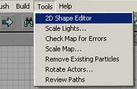
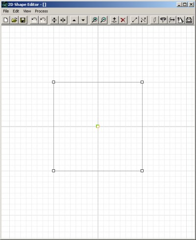
2Dシェイプ エディタは、次の方法で機能します。二次元の形状を作成し、好きな数だけエッジを与え、直線エッジまたはベジエエッジを作成し、最後にエディタ内で使用できるような3Dシェイプになるまで押し出しと回転を行うことができます。 本書で実際のシェイプの作成を始める前に、よく知っておくべき用語が2、3あります。頂点とは、シェイプの複数のエッジが結合する点です。vertex(頂点)の複数形は、verticesです。シェイプのエッジは頂点同士をつなぐ線のようなもので、1組のエッジにより囲まれた平らな面は、フェイスと呼ばれます。 下図は、単純な立方体における頂点、エッジ、そしてフェイスの位置を示しています。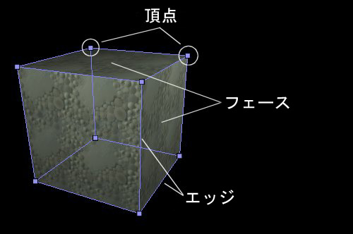
2Dシェイプ エディタへこの知識を応用すると、これから作成するシェイプはブラシのシェイプとなります (正確なフェイスとなるには設定を行う必要があり、このフェイスは複数のフェイスのうち1つになります)。シェイプを囲むように作成された線はエッジとなり、シェイプ作成のためにあちこちドラッグされる小さな四角形は頂点になります。 この画像は、2Dシェイプ エディタ内で、3Dブラシのエッジおよび頂点となる予定の部分を示しています。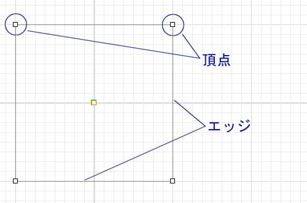
2Dシェイプ エディタ内のボタン
2Dシェイプ エディタの上側の枠にそって、一連のボタンがあります。これらは、さまざまな機能を実行するショートカットボタンです。ここにあるすべての機能は、エディタの上にある通常のメニューからも利用できますが、ボタンを使用するほうが速くアクセスできます。特定のボタンについてキーボードショートカットがあれば、それも機能の説明時に記載します。ボタンは8つのグループに分かれています。表示順に記載します。New (新規)、Open (開く)、Save (保存)
シェイプを回転する
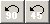
Rotate 90 Degrees (90度回転):このボタンをクリックするとブラシが左に90度回転します。回転がブラシ上で実行された場合、すべてのベジエ セグメントが、通常の直線セグメントに戻ってしまうことにご注意ください。このバグについては、Epicで調査中です。(Engine Build 829ではまだバグが存在しています)。 Rotate 45 Degrees (45度回転):このボタンをクリックすると、ブラシが左に45度回転します。上で述べたように、回転がブラシ上で実行されれば、すべてのベジエ セグメントは、通常の直線セグメントに戻ってしまうことにご注意ください。このバグについては、Epicで調査中です。(Engine Build 829ではまだバグが存在しています)。垂直および水平フリップ
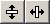
*Flip Vertical (垂直フリップ)*この機能は、シェイプをさかさまに (または垂直にミラーするなど、さまざまな方法で表現できます)反転させます。回転とは異なり、ベジエ セグメントに問題を起こすことはありません。 *Flip Horizontal (水平フリップ)*この機能は、シェイプ エディタ内のシェイプをミラーリングします。左右対称でないシェイプから、ミラーリングされたブラシの組み合わせを作成するために非常に便利な機能です。回転とは異なり、ベジエ セグメントに問題を起こすことはありません。Scale Up / Down (拡大/縮小)
Zoom In / Out (ズームイン・アウト)
Create Vertex (頂点の作成)、Delete Vertex (頂点の削除)
Make Linear (直線に変換), Make Bezier (ベジエ曲線に変換)
Create Brushes (ブラシを作成)
背景画像
シェイプ エディタの背景を、特定のビットマップファイルに設定できます(特定のテクスチャに合わせてブラシを作成する場合に便利です)。背景画像の使用には、2つのオプションがあります。1つ目は、[Open From Disk] (ディスクから開く)で、問題なく動作します。このオプションを選択すると画像が開き、シェイプエディタの背景に表示されます。使用されるスケールは、1グリッドサイズにつき1ピクセルです。2つ目のオプションは、[Get From Current Texture] (現在のテクスチャから取得)ですが、エディタをクラッシュさせるため(現時点ではビルド829で発生)、使用を推奨しません。背景画像としてはビットマップ(.bmp)ファイル以外サポートされない点にご注意ください。 背景画像はタイリングされません。また、グリッドがその画像の周囲に表示されます。
背景画像はタイリングされません。また、グリッドがその画像の周囲に表示されます。

シェイプを作成する
頂点を作成および削除する
それでは、このツールを使った実際の作業に入りましょう。必要なシェイプを達成するために、頂点をあちこち動かすことができます。頂点を動かすには、単に頂点で左ボタンをクリックして(そのまま離さずに)、必要な場所にドラッグします。頂点をクリックするとすぐに、その頂点が赤色に変わり、エッジの1つが濃い色になったことにお気づになりましたか？これらの頂点とエッジが、現在作業中のアクティブな頂点とアクティブなエッジです。 アクティブな頂点を動かすと、それと同時に自由に動いている1つの頂点があります。これは、将来のブラシのピボットポイントです。これについては、後でより詳しく説明します。
シェイプに頂点を追加するには、[Split Segment] (セグメントを分割)ボタンをクリック、またはショートカットの[CTRL]+[I]を押してしてください。この機能を使用すると、現在のエッジの中央に新しい頂点を配置できます。新しい頂点は追加後すぐ、他の頂点と同じように動かすことができます。
アクティブな頂点を動かすと、それと同時に自由に動いている1つの頂点があります。これは、将来のブラシのピボットポイントです。これについては、後でより詳しく説明します。
シェイプに頂点を追加するには、[Split Segment] (セグメントを分割)ボタンをクリック、またはショートカットの[CTRL]+[I]を押してしてください。この機能を使用すると、現在のエッジの中央に新しい頂点を配置できます。新しい頂点は追加後すぐ、他の頂点と同じように動かすことができます。
 シェイプから頂点を削除すると、その周囲の頂点は新しいエッジで相互に接続されます。頂点を削除するためのショートカットは、[Del]キーだけです。
シェイプから頂点を削除すると、その周囲の頂点は新しいエッジで相互に接続されます。頂点を削除するためのショートカットは、[Del]キーだけです。
ベジエと直線エッジ
シェイプエディタは、2種類のエッジをサポートします。これまで本文書で使用してきた直線をサポートするだけでなく、ベジエ曲線もサポートします。ベジエ曲線によって、よりなめらかな効果を得られることができ、曲線がさらに高速に作成されます。シェイプ上でベジエ エッジを作成するには、[Bezier Segment] (ベジエセグメント)ボタンをクリック、またはEdit>Segment>Bezierを選択してください。青いハンドルが2本、エッジに追加されて表示されます。これらのハンドルを動かすと、その間にあるエッジが曲がり、可能な限りなめらかな線が形成されます。ハンドルを頂点から遠くへドラッグすればするほど、ベジエ曲線の部分のカーブが急になります。ハンドルの端が、線をドラッグする部分です。言葉で詳細に説明するより、数秒でも、実際に試してみると、すぐに理解できるでしょう。 ベジエエッジに用意されている追加機能は、詳細度の変更です。このセグメントにおいて、[Detail Level] (詳細レベル) が3に設定されています。つまり、エッジに3つのサブセグメントあるということです。
ベジエエッジに用意されている追加機能は、詳細度の変更です。このセグメントにおいて、[Detail Level] (詳細レベル) が3に設定されています。つまり、エッジに3つのサブセグメントあるということです。
 この図は同じセグメントですが、セグメントの詳細が10に設定されています (その他のセグメント詳細には変更がありません)。エッジがなめらかになったことがすぐに見て取れます。詳細レベルを変更すると、現在アクティブなエッジのみに影響が及ぶことを覚えておいてください。詳細度が違うエッジを作成することができます。フレームレートへの影響を考慮して、使用する頂点の数をできるだけ制限してください。
この図は同じセグメントですが、セグメントの詳細が10に設定されています (その他のセグメント詳細には変更がありません)。エッジがなめらかになったことがすぐに見て取れます。詳細レベルを変更すると、現在アクティブなエッジのみに影響が及ぶことを覚えておいてください。詳細度が違うエッジを作成することができます。フレームレートへの影響を考慮して、使用する頂点の数をできるだけ制限してください。
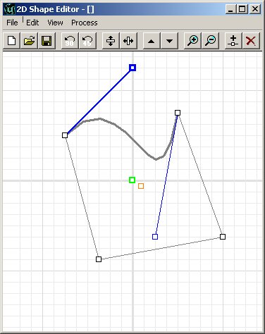
シェイプ回転とミラーリング
もう一度クリーンなシェイプでやり直します([New] ボタンをクリック、または[File] > [new]を選択します)。これで、シンプルな正方形が表示され、作業できる状態になりました。練習のために2、3の頂点を動かして違うシェイプに変え、1、2個頂点を追加することで、ここで変更を行うもう1つのシェイプを作ってください。 しまった、うっかり間違った方向に作ってしまいました (別の機能を説明するための下手な言い訳です)。シェイプが反対側を向くよう、手動で頂点を1つ1つ動かすこともできますが、もっと簡単な方法がもちろんあります。[Flip Vertical] (上下反転)または[Flip Horizontal] (左右反転) ボタンをクリックするだけで、水平および垂直の両方にシェイプを反転できます。
しまった、うっかり間違った方向に作ってしまいました (別の機能を説明するための下手な言い訳です)。シェイプが反対側を向くよう、手動で頂点を1つ1つ動かすこともできますが、もっと簡単な方法がもちろんあります。[Flip Vertical] (上下反転)または[Flip Horizontal] (左右反転) ボタンをクリックするだけで、水平および垂直の両方にシェイプを反転できます。
 また、回転ボタンを使用することによってもシェイプを回転できます。ただし、注意して下さい ― 回転が適用されると、すべてのベジエ エッジは直線エッジに再び変更されます。
ただスケールアップ/ダウンボタンを使用するだけでも、ブラシのサイズを変更できます。すべての変更は、サイズを2倍にするか半分にします。
また、回転ボタンを使用することによってもシェイプを回転できます。ただし、注意して下さい ― 回転が適用されると、すべてのベジエ エッジは直線エッジに再び変更されます。
ただスケールアップ/ダウンボタンを使用するだけでも、ブラシのサイズを変更できます。すべての変更は、サイズを2倍にするか半分にします。

複数の同時並行シェイプ
シェイプ エディタも、同じエリア内で複数のシェイプをサポートします。1つのブラシから非常に簡単に2つの別々のシェイプを作成できます。しかし、オリジナルシェイプの頂点のうち、1つでも2つ目のシェイプの頂点に重なっている場合、2つのシェイプをきちんと分けることは不可能です。つまり、複数の頂点が1点にあれば、それらは一緒に動きます。シェイプ エディタに新たなシェイプを追加するには、[Edit] > [Insert New Shape] を選択します。すると、正方形がもう1つデフォルトエリアに配置されます。効率性のために、このシェイプは1つ目のシェイプと同じように見えますが、1つ目のシェイプとはまったく接続されていません。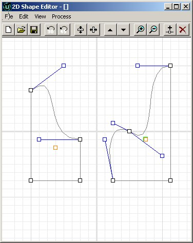
グリッドサイズとサイズ変更
これまでのところ、すべての頂点はグリッドにスナップされています。これは完全に正常な状態です。このグリッド設定も、エディタの標準グリッド設定に簡単に変更できます。この設定はメッシュあたり、1から64単位の間で設定できます。グリッドサイズが拡大された結果、頂点が正確なグリッド交点から外れても、頂点を動かせばグリッドにスナップできます。
シェイプを保存、シェイプをリロードする
シェイプを作成したら、同じマップにおける今後の編集セッション、またはまったく違うマップで使用するためにそのシェイプを保存および再ロードできます。また、作成されたブラシを保存したら、そのブラシは保存ファイルにまったく依存しません。シェイプを保存およびロードするためのオプションは、シェイプの再利用と利便性を目的に提供されています。シェイプは、2Dシェイプエディタで作成されたシェイプ専用の、.2ds形式で保存されています。ブラシの作成
シェイプからブラシを作成する用意ができた後、ブラシを作成する方法には2、3のオプションがあります。冒頭に言及したように、ここで作成されるシェイプは、ビルドされるブラシのフェイスを構成します。どのフェイスになるかは、ブラシを形成する方法次第で違います。この時点でいくつかのオプションがあります。シートブラシの作成
違うオプションを示すために、ブラシの例はすべて、作成された最終シェイプとなっています。シートブラシを作成することで、実際には、ゾーンポータルまたはその他のアイテムとして使用できる、2次元のブラシが作成されます。もちろん、ブラシの唯一のフェイスとなるシェイプを作成します。 シートブラシを作成するには、そのシートブラシをクリックするか、[Process] > [Sheet]を選択します。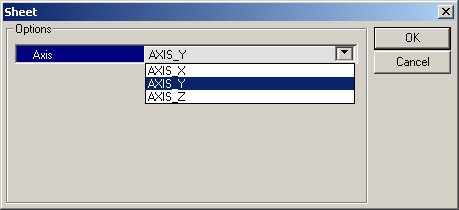
シェイプからシートを作成することをを選択した場合、1つのオプションしか表示されません。シェイプを作成する基となる面 (軸) を選択し、OKをクリックします。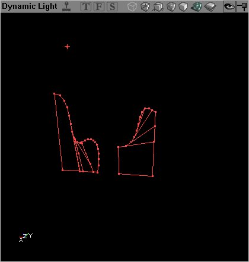
回転ブラシの作成
作成したシェイプを、ピボットポイントを軸に回転させて、円形のブラシを作成できます。これは、カーブした通路または曲がったパイプを作成する場合に非常に有効です。シェイプを回転するには、ピボットポイント (本書の冒頭で述べた浮いている頂点) を左、右、上、または下に離して置く必要があります。どの位置にするかはシェイプを回転する方法によって決まります。論理的に考えて、シェイプを水平に回転してブラシを作成する場合は、その場所によってピボットポイントを左または右に移動します。 シェイプの回転用オプションは次のとおり。
Sides (側面数) :これは、作成される側面の数です。
Sides Per 360 (360度あたりの側面数):360度回転を構成する総側面数です。
Axis (軸)シェイプを回転してブラシを作成する中心となる軸です。
このオプションのうち [Sides Per 360] は、１回転するまでに必要なステップ数を設定できます。そのため、回転シェイプを20側面で作成することも(丸く、スムーズな形状)、または6側面(6角形形状のブラシ)で作成することもできます。
[side] (側面数)は、実際に作成される側面の数を表します。
[Sides Per 360] を20に設定し、[Sides] を10に設定すると、半円のブラシが作成されます。[Sides Per 360] を48に設定し、[Sides] を12に設定すると、非常になめらかな直角が作成されます。
シェイプの回転用オプションは次のとおり。
Sides (側面数) :これは、作成される側面の数です。
Sides Per 360 (360度あたりの側面数):360度回転を構成する総側面数です。
Axis (軸)シェイプを回転してブラシを作成する中心となる軸です。
このオプションのうち [Sides Per 360] は、１回転するまでに必要なステップ数を設定できます。そのため、回転シェイプを20側面で作成することも(丸く、スムーズな形状)、または6側面(6角形形状のブラシ)で作成することもできます。
[side] (側面数)は、実際に作成される側面の数を表します。
[Sides Per 360] を20に設定し、[Sides] を10に設定すると、半円のブラシが作成されます。[Sides Per 360] を48に設定し、[Sides] を12に設定すると、非常になめらかな直角が作成されます。
 必要な設定を入力したあと、OKをクリックするとシェイプからブラシが作成されます。下図のブラシでは、[Sides Per 360] が48、側面数が16に設定されており、Y軸を中心に、シェイプの左へ向かってピボットポイントを中心に回転されています。
必要な設定を入力したあと、OKをクリックするとシェイプからブラシが作成されます。下図のブラシでは、[Sides Per 360] が48、側面数が16に設定されており、Y軸を中心に、シェイプの左へ向かってピボットポイントを中心に回転されています。
 下図もまた、まったく同じシェイプの回転ですが、同じ設定を使用した上でピボットポイントがシェイプの近くに移動されています。ご覧の通り、ブラシの角はより鋭角になっています。
下図もまた、まったく同じシェイプの回転ですが、同じ設定を使用した上でピボットポイントがシェイプの近くに移動されています。ご覧の通り、ブラシの角はより鋭角になっています。

押し出しブラシの作成
シェイプを押し出すことができます。つまり、まったく同じシェイプがブラシ内に作成されますが、後方へ直接押し出されることで3次元を形成します。 ご覧の通り、2つのオプションしかありません。1つ目は奥行き設定です。これは、エディタ内においてブラシの長さに直接変換されます。そのため、256に設定すると、奥行きが256単位のブラシを作成します。1024に設定すると、奥行きが1024単位のブラシを作成します。ここにも、ブラシが作成される軸を指定する [Axis] 軸オプションがあります。 奥行きを256、軸を標準軸に設定した場合の結果は以下のようになります。
Extruding to a Point (点に押し出す)
押し出しによるブラシ作成と同じく、「点に押し出す」方法は、2次元のシェイプをブラシの直接フェイスとして3次元ブラシを作成しますが、ブラシが1点に収れんされる点が押し出しブラシとは異なっています。正方形のシェイプを押し出すとピラミッドの形になり、円形を押し出すとコーン型になります。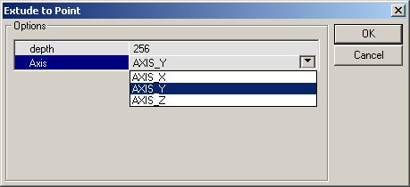
点に押し出す場合も、奥行きと軸の2つのオプションしかありません。通常のブラシ押し出しと同様、これらのオプションはエディタ単位によるブラシの奥行きと、押し出しが行われる軸に変換されます。ただし、実際に押し出しが行われる点は、ブラシの中心であると同時に、2次元シェイプのピボットポイントでもあります。つまり、ブラシを、(当然ながら) その背後にある点に押し出すことも、横に押し出すこともできます。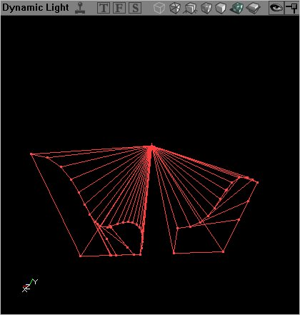
上の図の「点に押し出す」処理は、シェイプエディタ内でピボットポイントをシェイプの中心に直接配置した状態で、通常のシェイプに対して実施されました。これによって、ブラシがその背後にある1点から引き伸ばされているように見えます。 下図の押し出しも、上の図と同じ奥行きと軸の2つの設定を使用していますが、シェイプのずっと右下にピボットポイントが置かれています。この結果をあちこちから見るには、3Dビューポートの方がわかりやすいですが、このスクリーンショットを見れば、ピボットポイントが押し出しに与える影響をよく理解することができるはずです。
下図の押し出しも、上の図と同じ奥行きと軸の2つの設定を使用していますが、シェイプのずっと右下にピボットポイントが置かれています。この結果をあちこちから見るには、3Dビューポートの方がわかりやすいですが、このスクリーンショットを見れば、ピボットポイントが押し出しに与える影響をよく理解することができるはずです。
Extruding to a Bevel (ベベルに押し出す)
シェイプをベベルに押し出すと、点に押し出すときと同じようなブラシができますが、点に到達する前に面取りされます。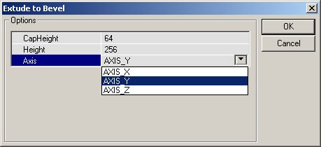
このブラシ作成のオプションは、作成されるブラシの奥行きに関連したCapHeightと、ブラシが押し出されるAxis (軸) です。この奥行きは、ブラシが引き伸ばされる元となる想像上の点です (「点に押し出し」と同じ)。 CapHeightは紛らわしく、バグがEpicに報告されていることにご注意ください、通常、CapHeightはブラシが切り取られる量を示しますが、少なくともビルド829ではブラシの実際の奥行きを示していることにご注意ください。 奥行きを256(つまり、ブラシの前面から256単位後ろに下がった点) で、CapHeightを192に指定した場合、(ブラシは実際に192単位となります)、面取された押し出しから作成されるブラシは下図のようになります。